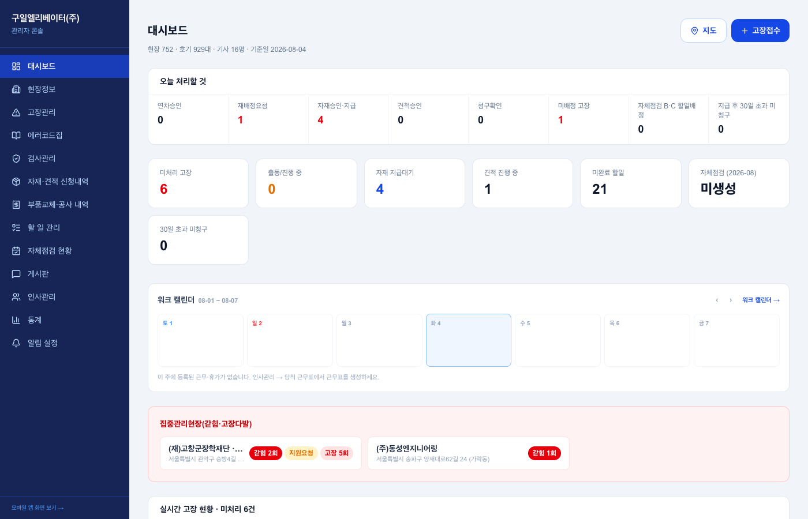

관리자 대시보드 (PC 콘솔) v0.1
1. 이 화면의 정체 — 모든 흐름의 집계판
- 관리자가 PC 로그인하면 도착하는 첫 화면 (관리자 PC 자동 분기 — 로그인 설계서 참조). 타사 관리자가 매일 처음 보는 얼굴이기도 하다
- 구성 원리: 위에서부터 "오늘 처리할 것"(행동 큐) → 상태 카운트 → 워크캘린더 → 지도/고장접수 전환. 각 숫자는 해당 메뉴로 점프하는 버튼
- 여기 있는 모든 숫자의 원천은 이미 설계된 화면들 — 고장(고장접수), 자재·견적 승인(자재·견적), 청구·30일 미청구(비용청구·할일), 자체점검(자체점검), 연차(워크캘린더)
2. 화면 요소

| 요소 | 핵심 규칙 |
|---|---|
| 헤더 통계 | 현장 n · 호기 n대 · 기사 n명 · 기준일 |
| 오늘 처리할 것 | 행동 큐 8종: 연차승인 · 재배정요청 · 자재승인/지급 · 견적승인 · 청구확인 · 미배정 고장 · 자체점검 B/C 할일배정 · 30일 초과 미청구. 0이어도 자리 유지(뭘 챙겨야 하는지 학습되게) |
| 상태 카운트 | 미처리 고장 · 출동/진행 중 · 자재 지급대기 · 견적 진행 중 · 미완료 할일 · 자체점검(당월 — "미생성" 경고 포함) · 30일 초과 미청구 |
| 워크 캘린더 | 주간 스트립 (모바일과 동일 데이터) |
| 대시보드/지도/고장접수 전환 | 지도 = 기사 위치·현장 분포 (T맵 좌표 기반), 고장접수 = 콘솔에서 직접 접수 |
4. QA 체크포인트 — 2026-08-04 스윕
- ✅ 렌더링·콘솔에러 0 (13메뉴 일괄)
- ✅ 자체점검 "미생성" 경고 노출 (8월 출석부 미생성 상태를 정확히 표시하고 있었음)
- 각 숫자 → 해당 메뉴 점프의 필터 일치 (예: "미배정 고장 3" 클릭 시 고장관리가 미배정 필터로 열리는지) — 개별 확인은 콘솔 화면별 QA에서
6. 화이트라벨 — 구일전용 → 타사 일반화
| # | 지금 | 어떻게 |
|---|---|---|
| 1 | 사이드바 회사명 + 콘솔 title (AdminApp) | tenants.name — 로그인 ①과 동일 소비 |
| 2 | "오늘 처리할 것" 구성이 구일 운영 방식 고정 | 1차 공통 유지 — 항목별 기능 플래그(당직 없으면 연차승인만 등)는 각 기능 플래그를 따라 자동 숨김 |
| 3 | 지도 = T맵 | tenants.features.tmap 공유 |
변경 이력
| 버전 | 날짜 | 변경 |
|---|---|---|
| v0.1 | 2026-08-04 | 최초 작성 — 재료 화면 11장 완성 후 집계판으로 작성(각 숫자의 원천을 설계서 링크로), 행동 큐 8종 명세 |